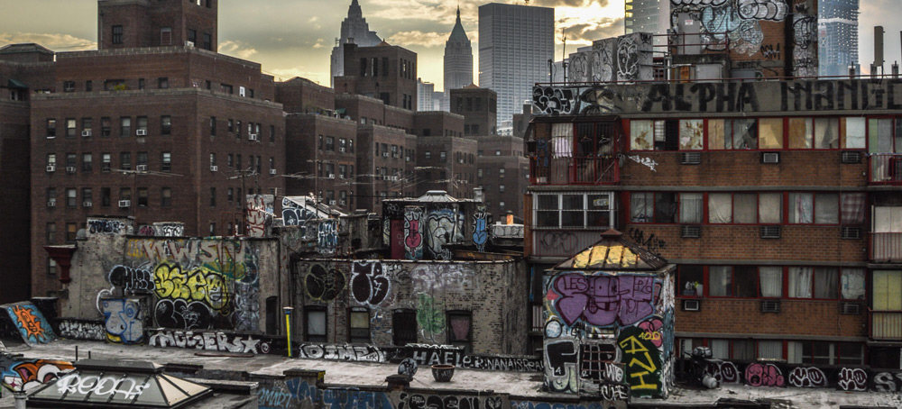

El graffiti nació en las calles de Nueva York durante los años 70, cuando jóvenes de barrios marginados usaban marcadores y aerosoles para firmar su nombre en trenes del metro. Lo que comenzó como una forma de marcar territorio pronto se convirtió en un lenguaje visual universal.
Durante los 80 y 90 se extendió por toda Europa y América Latina, evolucionando de simples "tags" a enormes murales con mensajes políticos, culturales y artísticos. Hoy es reconocido como una de las expresiones más auténticas del arte contemporáneo.
En México, el graffiti llegó a finales de los 80 de la mano del hip-hop. Ciudades como el Distrito Federal, Monterrey y Guadalajara se convirtieron en epicentros de este movimiento, dando voz a jóvenes que no encontraban espacio en el arte tradicional.
Aparecen las primeras firmas urbanas en ciudades de Estados Unidos.
El graffiti se populariza en los vagones del metro de Nueva York.
Surgen estilos complejos como el Wildstyle y aumenta la competencia entre artistas.
El graffiti comienza a ser reconocido como una forma de arte urbano.
El arte urbano forma parte de festivales, galerías y proyectos culturales en todo el mundo.
